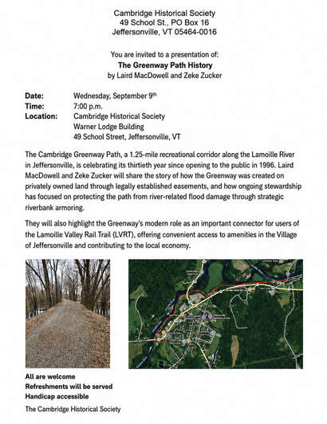

Monthly programs
The Cambridge Historical Society hosts a historical program and/or meeting on the 2nd Wednesday of the month at 7:00 pm at the Warner Lodge building, 49 School Street in Jeffersonville, VT. Our programs, meetings and events are free and open to the public. All are welcome.
In an effort to make our programs more accessible to all, we record them to our YouTube channel.
Next up — 9 September 2026
30 years of the Cambridge Greenway Path
The story of a 1.25-mile recreational corridor along the Lamoille River, told by Laird MacDowell and Zeke Zucker — how it was created through legally established easements on private land, and how stewardship has protected it from flood damage.
RSVP
The archive
29 programs, newest first
13 May 2026
Central Vermont's Burlington & Lamoille Railroad: Queen City to Cambridge Junction
8 Apr 2026
The Vermont Schoolhouse Project
11 Oct 2025
Cambridge History Walk
8 Oct 2025
History Unframed: a conversation with artist Eric Tobin
10 Sep 2025
Step Back in Time with the Cambridge Fun Run
9 Jul 2025
Vermont on the Silver Screen
18 May 2025
Grand Army of the Republic Highway, Memorial Day
Issues of the Bryan Gallery conversation series, oral histories and program recordings from 2013–2016 also live on our YouTube channel.